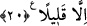

Hakk’ın pâk zâtından yüz çevirme!
20. Bunlar, düşman birliklerinin bozulup gitmedikleri evhamı içindedirler.
Müttefikler ordusu yine gelecek olsa, isterler ki, çölde göçebe Araplar içinde
bulunsunlar da, sizin haberlerinizi (uzaktan) sorsunlar. Zaten içinizde bulunsalardı
dahi pek savaşacak değillerdi.
“Bunlar düşman birliklerinin bozulup gitmedikleri evhamı içindedirler.” Yâni bu
münafıklar,
aşırı
korkaklıklarından
düşman
birliklerinin
yenilmediğini
zannetmektedirler. Bu yüzden de Medine’ye kaçtılar.
Ahzâb, Hendek savaşında Hz. Peygamber (s.a.)’in aleyhine oluşturulan müttefik
ordularıdır. Bunlar Kureyş ve Gatafan ile yahudilerden Kurayza ve Nadîroğulları’dır.
“Müttefikler ordusu yine” ikinci kere Medine’ye “gelecek olsa,” savaşmamak için
“isterler ki, çölde” Medine dışında “göçebe Araplar içinde bulunsunlar da” Medine
tarafından gelen herkese “sizin haberlerinizi” ve savaş mâcerânızı, sizinle düşmanlar
arasında geçen şeyleri “sorsunlar.” Yâni onlar sizden uzakta, olup bitenlere şâhid
olmadan, çölde yaşayanlara sorarak sizin haberlerinizi duymak isterler.
“Zaten” bu ikinci kerede “içinizde” aranızda Hendekte “bulunsalardı” Medine’ye
dönmeselerdi ve bir savaş olsaydı “dahi pek savaşacak değillerdi.” Hesaba çekilip
takip edilmezlerse ancak gösteriş için ve ayıplanmaktan çekindikleri için savaşırlardı.
[187]. Ebû Dâvûd, Cihâd 14; İbnü’l-Esîr, Nihâye, I, 337.